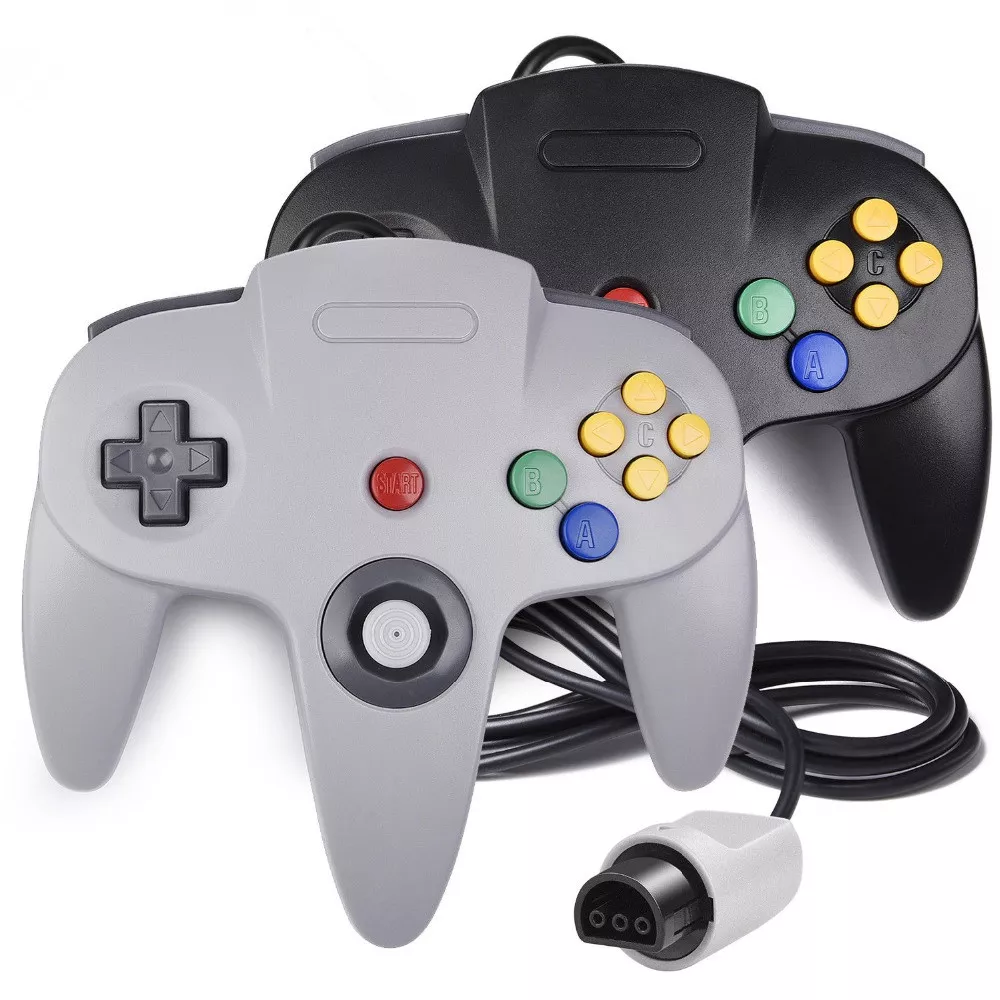

ABOUT
The Nintendo 64 is a home video game console developed by Nintendo. The successor to the Super Nintendo Entertainment System, it was released on June 23, 1996 in Japan; September 26, 1996 in North America; and on March 1, 1997 in Europe and Australia. It was the last major home console to use cartridges as its primary storage format until the Nintendo Switch in 2017. It competed primarily with the Sony PlayStation and the Sega Saturn.
